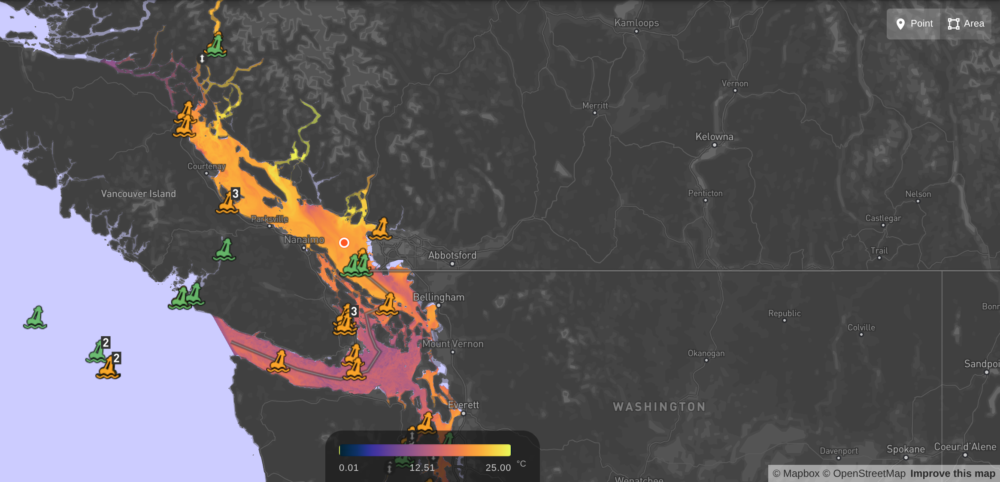
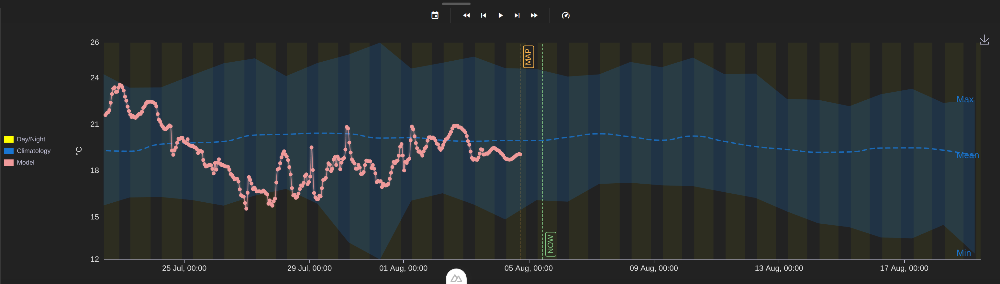
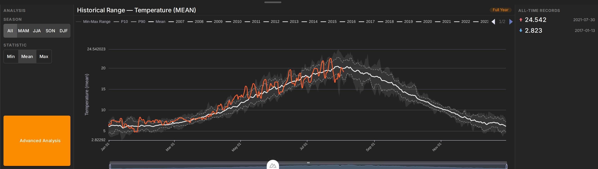
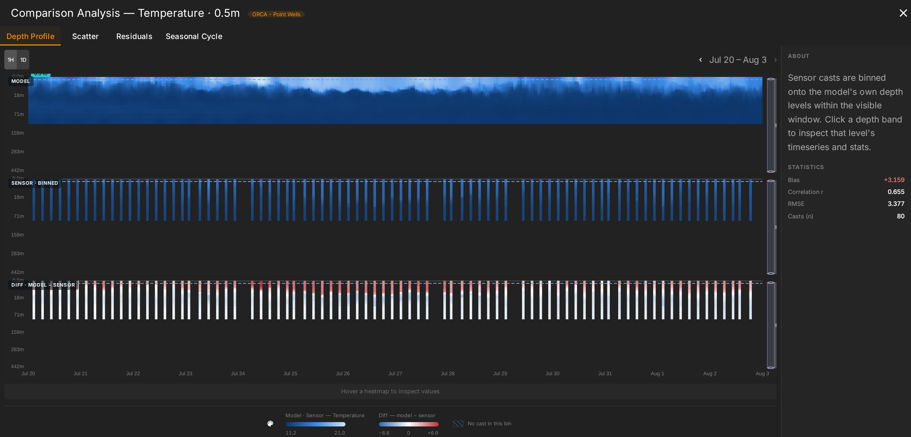
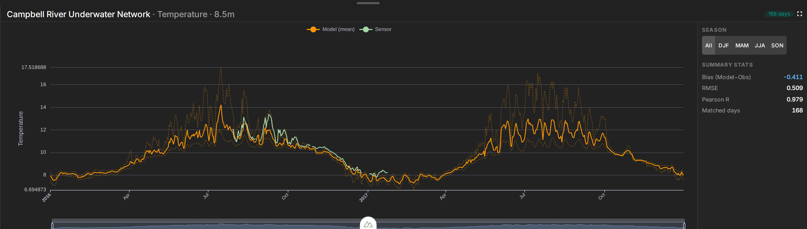
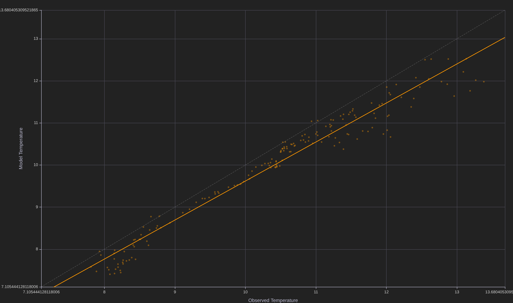
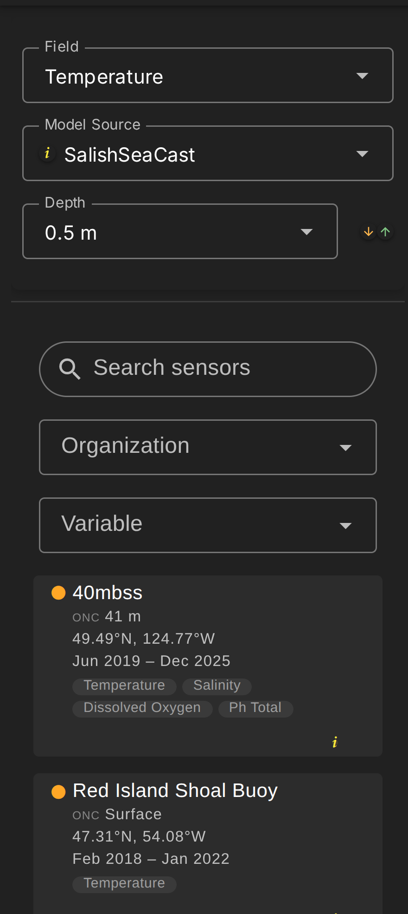
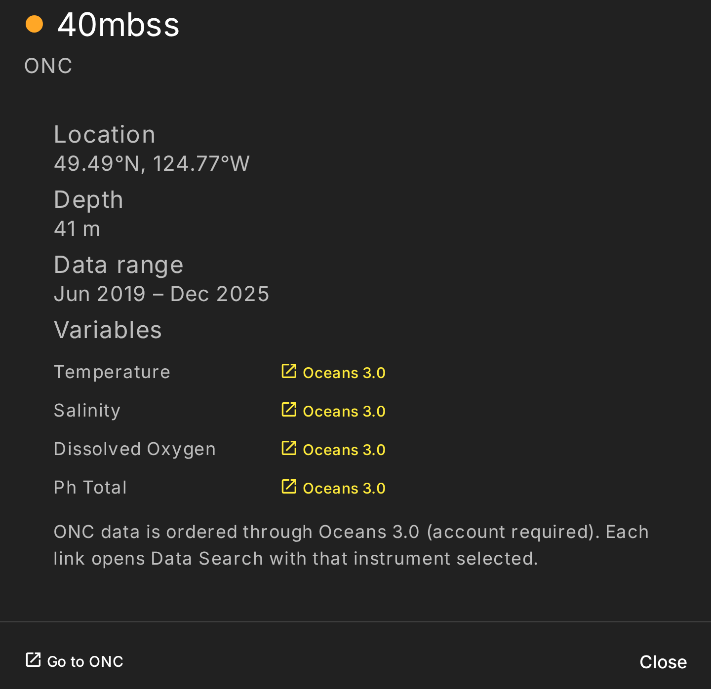

Ocean acidification & carbonate-chemistry explorer for the Salish Sea — pairing the
SalishSeaCast model with moored and profiling observations, and evaluating one against the other.
8
Model variables
51
Observing platforms
0–442 m
Depth range
Hourly
Model cadence
A
Interactive model map
MapboxGL + pre-rendered tiles

The chosen variable, depth and timestep are served as pre-rendered WebP tiles, reprojected from the
model's curvilinear grid. Observing platforms sit on a GL symbol layer, a colorbar keys the field, and
hovering reports the value under the cursor. Point and area query modes feed every chart here.
B
Point timeseries vs. climatology
Timeseries tab

Modelled temperature at a clicked point and depth (pink) against the day-of-year climatological
envelope — min, mean and max (blue) — with day/night shading, a NOW marker, and playback controls
that animate the map through the series.
C
Historical range & records
Model Analysis tab

The whole historical record for one location: every year overlaid on the P10–P90 envelope and long-term
mean, filterable by season and statistic. All-time extremes are surfaced — here
24.542 °C (2021-07-30) and 2.823 °C (2017-01-13).
D
Depth profile — model vs. profiler
ORCA Point Wells

Three stacked depth–time fields: the model, the profiler's casts binned onto the model's own depth
levels, and their difference. Here 80 casts give a bias of
+3.159, r = 0.655, RMSE 3.377.
E
Model–sensor agreement
Campbell River, 8.5 m

Daily model (orange, with its min–max spread) against the moored sensor (green) at the station's own depth.
Skill scores track the visible window: bias −0.411, RMSE 0.509,
Pearson R = 0.979 over 168 matched days.
F
Matched-pair regression
Comparison → Scatter

Every matched model–observation pair against the 1:1 reference (dashed) and the linear best fit (orange):
R² = 0.958, slope 0.927, intercept
+0.347. Residual and seasonal-cycle views sit on adjacent tabs.
G
Field & sensor picker

Variable, model source and depth sit above a searchable sensor list filterable by organisation and
variable. Each card carries depth, position, record span and the variables that station measures.
H
Station metadata

Per-station detail with direct links out to the source archive — ONC Oceans 3.0, ERDDAP, or NetCDF/CSV
downloads per variable — so any figure here can be traced back to raw data.